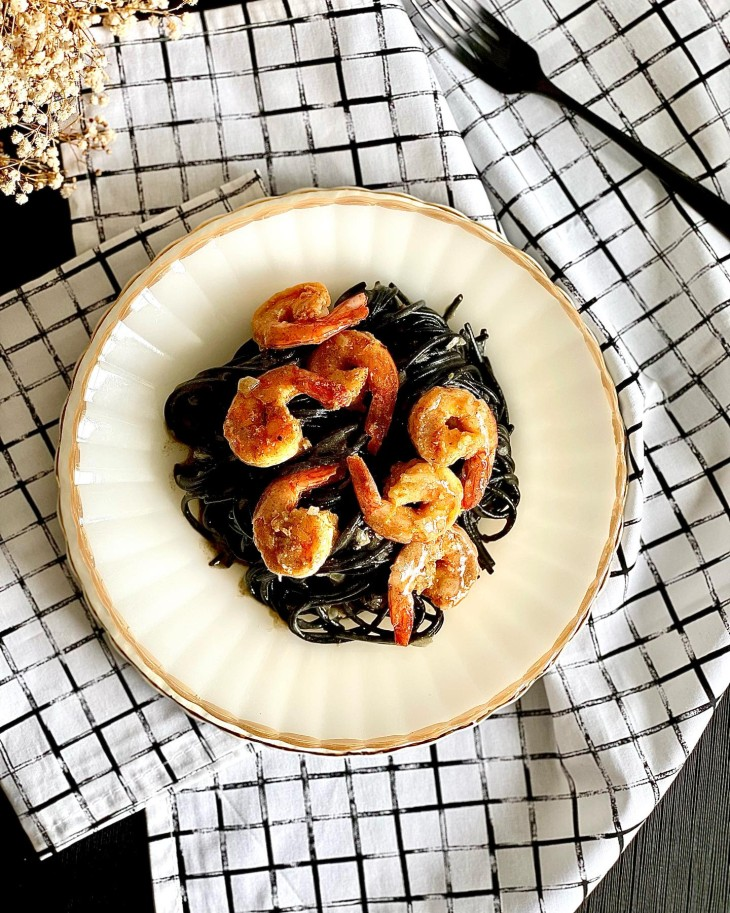

Espaguete nero di seppia ao limone com camarões

Ingredientes
- 400 gramas de camarões médios.
- 200 gramas de macarrão nero di seppia.
- 1 limão-siciliano.
- 1 xícara de chá de queijo parmesão ralado.
- 1 cebola picada.
- 1 colher de sopa de manteiga.
- Azeite, sal, pimenta-do-reino e páprica defumada a gosto.
Modo de Preparo
- 1º Comece temperando os camarões com sal, pimenta-do-reino e páprica.
- 2º Aqueça uma frigideira alta com azeite e doure os camarões. Reserve.
- 3º Na mesma frigideira, adicione a manteiga e mais azeite, depois refogue a cebola até dourar.
- 4º Adicione o macarrão e água fervente suficiente para cobrir (aproximadamente 1 e 1/2 xícara).
- 5ºAcrescente parte das raspas e o suco do limão.
- 6º Tempere com sal e pimenta e deixe cozinhar.
- 7º Quando estiver quase no ponto de cozimento desejado, adicione o queijo parmesão ralado e mais raspas do limão. Misture bem.
- 8º Volte os camarões para a panela para aquecer.
- 9º Sirva em seguida. Bom apetite.